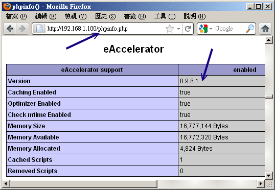
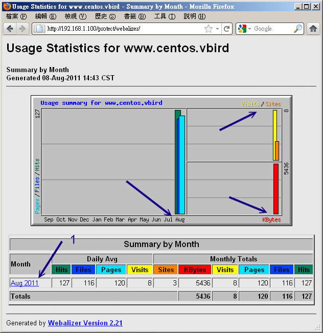
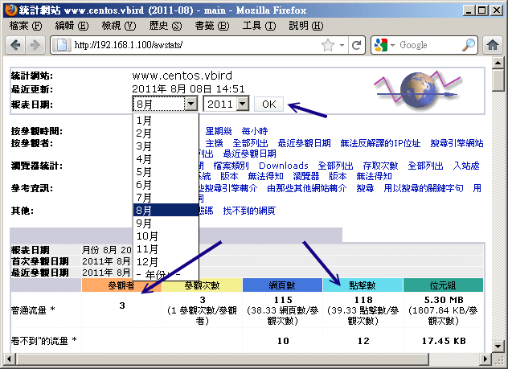

除了這些基本的 Apache 使用方式之外，我們還有哪些事情可以玩的？當然還有很多啦！包括有趣的 PHP
效能強化模組、登錄檔分析以瞭解整個 Apache 的使用情況等等！讓我們來瞧一瞧！
 20.4.1 PHP 強化模組 (eaccelerator) 與
Apache 簡易效能測試
20.4.1 PHP 強化模組 (eaccelerator) 與
Apache 簡易效能測試
雖然 PHP 網頁程式標榜的是速度快速，不過因為 PHP 畢竟是先將一些可用函數先編譯成為模組，然後當網頁使用到該 PHP
程式的時候，再由呼叫 PHP 模組來達成程式所需要的行為。由於多了一道手續，
所以他的執行效能還是有別於傳統編譯的程式語言囉。
那麼如果我們可以將 PHP 程式預先轉換成為可直接執行的 binary file，不就可以直接讀取進而加快速度嗎？
沒錯！是這樣～這東西稱為預編器～其中有一套軟體稱為 eaccelerator，eaccelerator 可以將你的 PHP
程式與 PHP 核心及相關函式庫預先編譯後暫存下來，以提供未來使用時可以直接執行，加上他可以優化你的
PHP 程式，因此，可以讓你的 PHP 網頁速度增快不少喔！eaccelerator 的官方網站在底下：
整個安裝的流程很簡單啦！你先將這個軟體的原始碼下載下來，我這裡假設你將他下載到 /root 目錄下，
另外你必需要確定你有安裝 php-devel, autoconf, automake, m4, libtool 等軟體才行！那就趕緊來安裝吧！(鳥哥是以
0.9.6.1 這一版為範例的喔！)
# 1. 解壓縮檔案，並且進行 patch 的動作：
[root@www ~]# cd /usr/local/src
[root@www src]# tar -jxvf /root/eaccelerator-0.9.6.1.tar.bz2
[root@www src]# cd eaccelerator-0.9.6.1/
# 2. 利用 phpize 進行 PHP 程式的預處理
[root@www eaccelerator-0.9.6.1]# phpize
# 過程會出現一些警告資訊，不要理他沒關係！
[root@www eaccelerator-0.9.6.1]# ./configure --enable-eaccelerator=shared \
> --with-php-config=/usr/bin/php-config
[root@www eaccelerator-0.9.6.1]# make
# 3. 將他整個安裝起來！
[root@www eaccelerator-0.9.6.1]# make install
# 此時這個新編譯的模組會被放置到 /usr/lib64/php/modules/eaccelerator.so 當中！
|
將模組處理完畢之後接下來就是要讓 PHP 使用這個模組啦！如何進行呢？
# 1. 預先載入這個 PHP 的模組：
[root@www ~]# echo "/usr/lib64/php/modules/" >> \
> /etc/ld.so.conf.d/php.conf
[root@www ~]# ldconfig
# 關於 ld.so.conf 以及 ldconfig 我們在基礎篇談過了，請自行參考喔！
# 2. 修改 php.ini 喔！
[root@www ~]# vim /etc/php.ini
# 在這個檔案的最底下加入這幾行：
;;;;;;;;;;;;;;;;;;;;;;;;;;;;;;;;;;
; http://eaccelerator.net/ ;
; 2011/08/08 VBird ;
;;;;;;;;;;;;;;;;;;;;;;;;;;;;;;;;;;
extension="eaccelerator.so"
eaccelerator.shm_size="16"
eaccelerator.cache_dir="/tmp/eaccelerator"
eaccelerator.enable="1"
eaccelerator.optimizer="1"
eaccelerator.check_mtime="1"
eaccelerator.debug="0"
eaccelerator.filter=""
eaccelerator.shm_max="0"
eaccelerator.shm_ttl="0"
eaccelerator.shm_prune_period="0"
eaccelerator.shm_only="0"
eaccelerator.compress="1"
eaccelerator.compress_level="9"
# 3. 建立 eaccelerator 的暫存資料，重點在於權限要設定正確！
[root@www ~]# mkdir /tmp/eaccelerator
[root@www ~]# chmod 777 /tmp/eaccelerator
[root@www ~]# /etc/init.d/httpd restart
|
基本上這樣就設定妥當啦！要注意的是：『因為你的 eaccelerator
是根據目前這一版的 PHP 核心所編譯出來的，所以未來如果你的 Linux distribution 有釋出新版的
PHP 時，你也順利更新到新版的 PHP 了，那你的這個 eaccelerator 就必需要自行手動再更新一次，
以配合到正確的 PHP 版本，否則這個模組將不會正確運作。』！很重要喔！
那如何確認這個模組有正確的在運作呢？你可以利用 20.2.4
小節談到的 phpinfo() 這個函式來查閱，透過瀏覽器你應該會看到如下的畫面：

圖 20.4-1、確定 eaccelerator 有運作的畫面
如果你的 eaccelerator 沒有啟動的話，那就看不到上圖的畫面啦！藉由這個動作來測試測試吧！ ^_^！
接下來我們利用 Apache 提供的一個小程式來測試一下我們網站的效能吧！這個程式叫做 ab ，
他可以主動的向主機重複要求多筆資料來確認主機的效能喔！
[root@www ~]# ab [-dSk] [-c number] [-n number] 網頁檔名
選項與參數：
-d ：不要顯示 saved table 的百分比資料；通常不要那個資料，所以會加 -d
-k ：還記得上面的 KeepAlive 吧！加入 -k 才會以這樣的功能測試；
-S ：不顯示長訊息，僅顯示類似 min/avg/max 的簡短易懂訊息！
-c ：同時有多少個『同時連線』的設定(可想成同時連線的 IP )
-n ：同一個連線建立幾個要求通道！(可想成同一個 IP 要求的幾條連線)
更多的訊息請自行 man ab 喔！
# 針對我們剛剛測試時的 phpinfo.php 這個檔案來測試！
[root@www ~]# ab -dSk -c100 -n100 http://localhost/phpinfo.php
This is ApacheBench, Version 2.3 <$Revision: 655654 $>
Copyright 1996 Adam Twiss, Zeus Technology Ltd, http://www.zeustech.net/
Licensed to The Apache Software Foundation, http://www.apache.org/
....中間省略....
Document Path: /phpinfo.php
Document Length: 54204 bytes
....中間省略....
Total transferred: 5436100 bytes
HTML transferred: 5420400 bytes
Requests per second: 39.97 [#/sec] (mean)
Time per request: 2501.731 [ms] (mean)
Time per request: 25.017 [ms] (mean, across all concurrent requests)
Transfer rate: 2122.01 [Kbytes/sec] received
....底下省略....
|
根據這個軟體的輸出你會知道每秒鐘的傳輸速率、最大傳輸速度等等，可以約略知道一下基本效能啦！
不過鳥哥這個程式是在自己機器上面測試的，速度快是正常的！你可以在網路的另一頭來測試一下說！
(註：這個 ab 程式對於讀取 MySQL 之類的網頁似乎沒有辦法成功的完成測試的樣子，
你應該以較單純的網頁來測試吧！)
20.4.2 syslog 與 logrotate
請特別注意，我們的 Apache 登錄檔主要記錄兩個東西，分別是：
- /var/log/httpd/access_log ：用戶端正常要求的記錄資訊
- /var/log/httpd/error_log ：使用者錯誤要求的資料，包括伺服器設定錯誤的資訊等。
那個 /var/log/httpd/error_log 可以讓你處理很多設定錯誤的情況，包括網頁找不到、
檔案權限設定錯誤、密碼檔案檔名填錯等等。至於 access_log 則可以讓你分析那個網頁最熱門！ ^_^！
不過你可得注意的是：『在稍有規模的網站下，Apache
的登錄檔每週記錄量甚至可達 1GB 以上』的紀錄。以鳥哥的主網站來說，一個星期逼近 1GB
的登錄檔是合理的...
不過，因為登錄檔是純文字資訊，所以如果能夠給予壓縮的話，那麼備份下來的登錄檔將可以減少到數十MB而已，
這樣可大大的減少了磁碟空間的浪費啊！如果你是使用預設的 Apache 來處理你的伺服器時，
那麼系統已經作了一個 logrotate 給你使用了，如果你是使用 Tarball 自己安裝的，
那麼...你就得要自行手動建立底下這個檔案啦！鳥哥底下是以 CentOS 6.x 提供的檔案來作說明的：
[root@www ~]# vim /etc/logrotate.d/httpd
/var/log/httpd/*log {
missingok
notifempty
compress <==建議加上這一段，讓你的備份登錄檔可以被壓縮
sharedscripts
delaycompress
postrotate
/sbin/service httpd reload > /dev/null 2>/dev/null || true
endscript
}
|
為什麼這裡很重要呢？鳥哥的伺服器曾經發生過一件事情，就是....突然 WWW 效能變很差！
後來追蹤的原因竟然是... /var/ 的容量被用完了！而耗掉這個 partition 的元兇竟然是 Apache 的登錄檔！
當時 /var/ 僅給 5GB ，而每個星期的登錄檔就上達 1GB 以上，備份四個星期的結果， /var/ 想不爆掉也很難～
所以啦，建議你的 /var 要給個 10GB 以上才好吶！而且備份登錄檔也要壓縮才好吶！
此外，透過分析登錄檔其實我們可以知道我們的網站到底是哪一個網頁最熱門？也且也能知道用戶端是來自哪裡呢！目前針對
Apache 有很多的分析軟體，我們底下僅介紹兩個常見的分析軟體給大家呦！
20.4.3
登錄檔分析軟體：webalizer
事實上，CentOS 6.x 預設就提供了 webalizer 這個分析軟體了！你只要將這套軟體安裝上來就是了。
如果你不是使用 CentOS 呢？沒關係，官方網站上也可以下載，安裝也很簡單！
CentOS 6.x 提供的這個軟體設定檔在 /etc/webalizer.conf ，而且他設定每天會分析一次 WWW 的登錄檔，
不過這個軟體預設會將輸出的結果放置到 /var/www/usage ，並且這個目錄僅有本機可以查閱，
鳥哥並不喜歡這樣的設定。我們剛剛不是有建立一個保護目錄 /var/www/html/protect 嗎？
這個目錄的功能來啦！鳥哥預計將 webalizer 的輸出資料放置到 /var/www/html/protect/webalizer 底下去，
所以知道密碼的都能夠查閱呢！整個動作是這樣的：
# 1. 先處理設定檔，變更指定一下我們要輸出的目錄即可：
[root@www ~]# vim /etc/webalizer.conf
# 確定一下底下這幾行是正確的！其他的則保留預設值
LogFile /var/log/httpd/access_log <==約在 28 行
OutputDir /var/www/html/protect/webalizer <==約在 42 行
Incremental yes <==約在 67 行
# 2. 建立該保護目錄的資料：
[root@www ~]# cp -a /var/www/usage/ /var/www/html/protect/webalizer
[root@www ~]# /etc/init.d/httpd restart
# 3. 開始測試執行 webalizer 的分析工作
[root@www ~]# webalizer
|
現在請你在瀏覽器上面輸入： http://your.hostname/protect/webalizer ，看看輸出的結果是如何吧！
結果應該會如下所示：

圖 20.4-2、webalizer 分析工具所得的分析畫面
在上圖當中的箭頭 1 處你還可以點選喔，點選後會告知你當月的各項分析結果，很不錯吧！
20.4.4 登錄檔分析軟體：awstats
除了 webalizer 之外，我們其實還可以透過 awstats 這個厲害到不行的 perl 的程式來進行資料分析，
由於這個軟體是以 perl 來執行的，所以請確定你的 mod_perl 已經安裝且 CGI 的執行權限已經啟動了！
這個軟體的特色是：
這套軟體不但可以由系統的 cron 來進行分析，甚至還提供瀏覽器直接以 CGI 的方式來即時更新登錄檔吶！
真是厲害厲害！鳥哥個人是比較不喜歡使用瀏覽器來線上更新分析的結果，
因為在你更新分析結果時，怎麼知道系統會不會很忙碌？如果系統正在忙碌中，
這套軟體的分析可也是很耗費系統資源的吶！所以建議直接以 crontab 的方式來處理即可。
目前官方網站不但提供 tarball 甚至也提供 RPM 來給使用者下載了！真是方便啊！
但是你還是要注意的，這個軟體曾經因為安全性的問題導致很多網站的掛點，
所以建議你還是把這個軟體的輸出結果放置在受保護的目錄中喔！底下鳥哥以 7.0-1 這個 RPM 版本來說明，
請你自行到官方網站下載吧！(註：檔名為 awstats-7.0-1.noarch.rpm )
假設你將這個 RPM 檔案放置到 /root 當中，那麼自己 rpm -ivh filename 去安裝他吧！
不要跟我說你不會 RPM ～鳥哥是會昏倒的～@_@！由於這個 RPM 檔案將 awstats 的資料通通放置到 /usr/local/awstats 當中去了！
為了自己網頁設定上的方便，建議你是可以這樣做的：
# 1. 先安裝後再將 awstats 提供的 Apache 設定資料給他複製到 conf.d 下
[root@www ~]# rpm -ivh awstats-7.0-1.noarch.rpm
[root@www ~]# cp /usr/local/awstats/tools/httpd_conf \
> /etc/httpd/conf.d/awstats.conf
[root@www ~]# vim /etc/httpd/conf.d/awstats.conf
Alias /awstatsclasses "/usr/local/awstats/wwwroot/classes/"
Alias /awstatscss "/usr/local/awstats/wwwroot/css/"
Alias /awstatsicons "/usr/local/awstats/wwwroot/icon/"
Alias /awstats/ "/usr/local/awstats/wwwroot/cgi-bin/"
<Directory "/usr/local/awstats/wwwroot">
Options +ExecCGI
AllowOverride AuthConfig <==這裡改成這樣，因為要保護！
Order allow,deny
Allow from all
</Directory>
[root@www ~]# /etc/init.d/httpd restart
|
awstats 還真的挺貼心的，因為他釋出的文件當中就有關於 Apache 的設定資料，我們直接將他放到 conf.d/
那個目錄下並且更名後，重新啟動 Apache 就生效了！真方便。再來則是要針對我們的 WWW 登錄檔來設定啦！設定檔其實是在
/etc/awstats 目錄下，在該目錄下有個範例檔為 awstats.model.conf，其實這個設定檔『檔名』格式為：
因為鳥哥這部主機名稱為 www.centos.vbird，所以假設主機名稱為 www，所以檔名就應該是
awstats.www.conf 囉！請你將他複製一個新檔，然後這樣做：
[root@www ~]# cd /etc/awstats
[root@www awstats]# cp awstats.model.conf awstats.www.conf
[root@www awstats]# vim awstats.www.conf
# 找到底下這幾行，並且修改一下內容啊：
LogFile="/var/log/httpd/access_log" <== 51行：確定登錄檔所在的位置
LogType=W <== 63行：針對 WWW 的登錄檔分析
LogFormat=1 <==122行：Apache 的登錄檔格式
SiteDomain="www.centos.vbird" <==153行：主機的 hostname
HostAliases="localhost 127.0.0.1 REGEX[centos\.vbird$]"
DirCgi="/awstats" <==212行：能夠執行 awstats 的目錄
DirIcons="/awstatsicons" <==222行：awstats 一些小圖示的目錄
AllowToUpdateStatsFromBrowser=0 <==239行：不要利用瀏覽器來更新！
Lang="tw" <==905行：重要！這是語系！
|
接著開始測試一下是否可以產生正確的分析資料出來？
[root@www awstats]# cd /usr/local/awstats/wwwroot/cgi-bin
[root@www cgi-bin]# perl awstats.pl -config=www -update \
> -output > index.html
# 那個 -config 後面接的就是 awstats.www.conf 的意思！會產生 index.html
[root@www cgi-bin]# ls -l
awstats082011.www.txt <==剛剛才建立的重要資料檔！
awstats.pl <==就是剛剛我們下達的執行檔！
index.html <==重要輸出首頁檔案
|
接下來讓我們趕緊來建立保護目錄的 .htaccess 檔案吧！請注意，鳥哥這裡假設你已經有密碼檔了，
所以直接建立檔案即可啊！
[root@www ~]# cd /usr/local/awstats/wwwroot
[root@www wwwroot]# vi .htaccess
AuthName "Protect awstats data"
Authtype Basic
AuthUserFile /var/www/apache.passwd
require valid-user
|
之後，只要你輸入『http://your.IP/awstats/』，就能夠看到輸出的圖表了！圖表有點像這樣：

圖 20.4-3、awstats 分析工具所得的分析畫面
事實上，資料非常的多，你可以自行查閱輸出的結果。在上圖當中的箭頭處，你還可以自己選擇曾有的月份資料來進行顯示！
最後，將分析的動作規定在每天三點的時候跑，你可以這樣做：
[root@www ~]# vim /usr/local/awstats/wwwroot/cgi-bin/awstats.sh
cd /usr/local/awstats/wwwroot/cgi-bin
perl awstats.pl -config=www -update -output > index.html
[root@www ~]# chmod 755 /usr/local/awstats/wwwroot/cgi-bin/awstats.sh
[root@www ~]# vim /etc/crontab
0 3 * * * root /usr/local/awstats/wwwroot/cgi-bin/awstats.sh
|
這樣你就知道你的主機到底有多受歡迎囉！ ^_^！另外，再次千萬拜託！這個軟體所在的目錄務必要製作密碼保護！不要隨意釋放出來！
甚至上面提供的一些目錄的連結你都可以根據自己的主機與喜好來重新修改，會比較安全的啦！